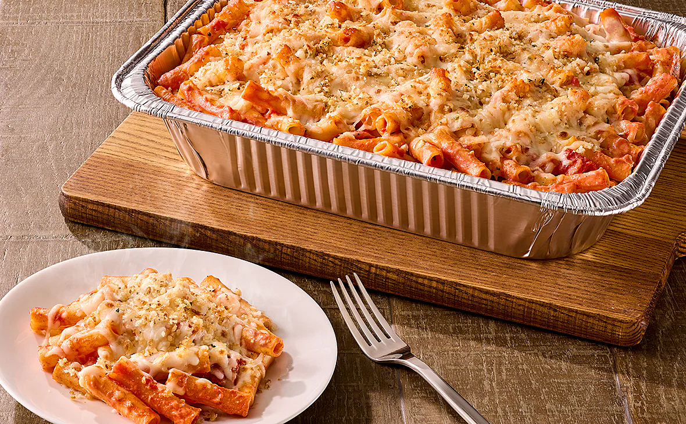

Baked-ziti

The Baked-ziti, is a traditional and staple dish for many southern Italian towns. Fun little fact regarding this delicacy, ziti is short for maccheroni di zita, or "macaroni of the bride."
There isn't one specefic way of cooking up a Baked-ziti, some decide to make it without meat, others put emphasis on the cheese and some even omit using tomato paste.
How you want your Baked-ziti, is entirely up to you. With that being said, I'll go over on how to make the traditional version. So to get started you'll need;
- 1 pound dry ziti pasta
- 1 onion chopped and diced
- 1 pound lean ground beef
- 2 (26 ounce) jars spaghetti sauce
- 6 ounces provolone cheese, sliced
- 1 1/2 cups sour cream
- 6 ounces mozzarella cheese, shredded
- 2 tablespoons grated Parmesan cheese
Steps:
- Bring a large pot of lightly salted water to a boil. Add ziti pasta, and cook until al dente, about 8 minutes; drain.
- In a large skillet, brown onion and ground beef over medium heat. Add spaghetti sauce, and simmer 15 minutes.
- Preheat the oven to 350 degrees F (175 degrees C). Butter a 9x13 inch baking dish. Layer as follows: 1/2 of the ziti, Provolone cheese, sour cream, 1/2 sauce mixture,
remaining ziti, mozzarella cheese and remaining sauce mixture. Top with grated Parmesan cheese.
- Bake for 30 minutes in the preheated oven, or until cheeses are melted.